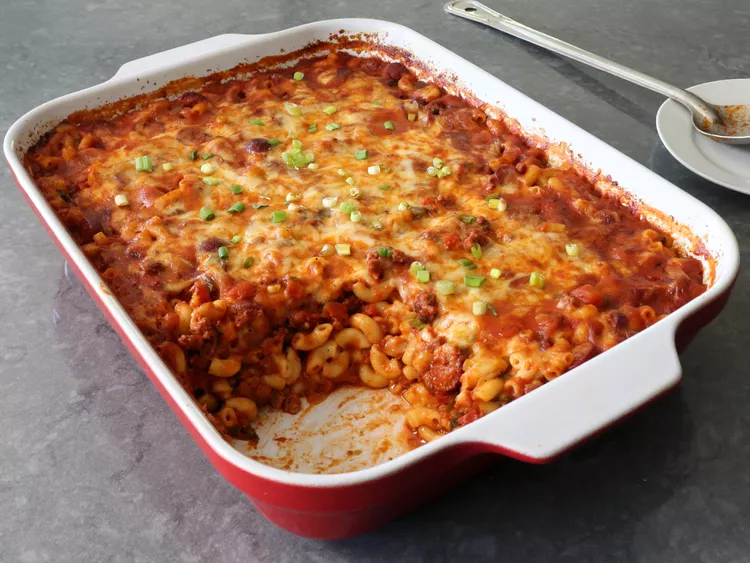

Mac and Cheese

Description
If you want some nostalgia kicking in, this is your go-to Mac and Cheese recipe!
Ingredients
- Macaroni
- Butter and flour
- Milk
- Cheese
- Seasonings
- Bread crumbs
How to cook
- Boil the noodles, drain and transfer to a prepared baking dish.
- Make the cheese sauce, pour the sauce over the noodles, and stir.
- Make the topping, spread it over macaroni and cheese, and sprinkle with paprika.
- Bake the mac and cheese until the topping is golden brown.